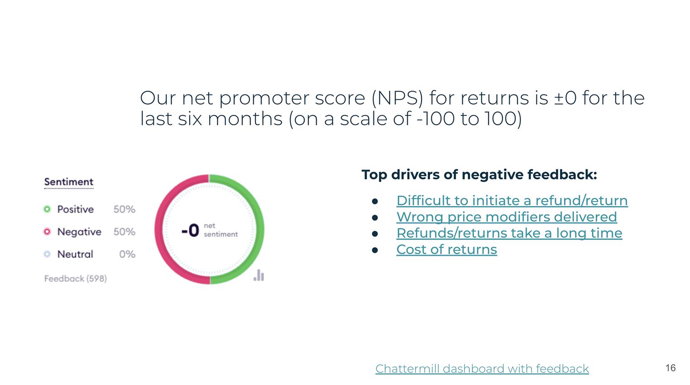

THE GOAL
Implement self-service workflows that allow users to initiate, track, and complete returns independently reducing operational overhead and minimizing reliance on Customer Experience.
THE PROBLEM
The lack of a self-serve return solution leads to a poor customer experience, as users are unable to independently initiate or manage their returns. This limitation not only drives negative feedback but also places additional strain on the Customer Experience team, who must manually manage all return-related requests.

The chart shows the volume of inbound conversations handled by the Customer Experience team, with returns making up the majority. This points to a clear opportunity to reduce support load by introducing a self-serve returns flow.
NPS scores for return-related queries, highlighting key drivers of negative feedback in the returns experience.